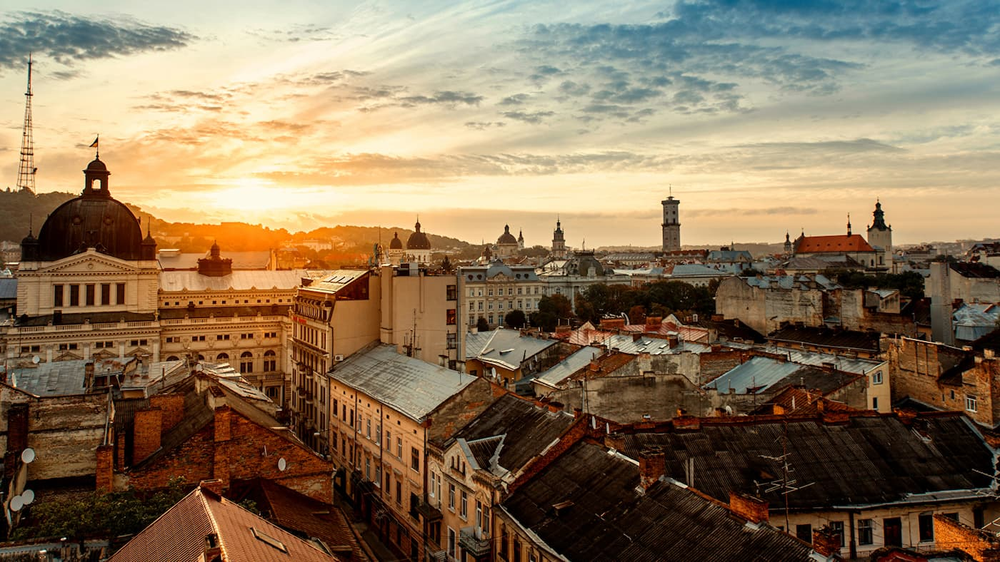

Місце народження: 31 липня, 2005 року, м. Київ
Освіта: СЗШ №74, м. Київ; НТУУ "КПІ", м. Київ
Львів — це культурна столиця України, яка зачаровує своїми архітектурними шедеврами, вузькими середньовічними вуличками та неповторною атмосферою. Засноване у 1256 році, місто має довгу і багату історію, яка відображається у його будівлях та площах.
Однією з найвідоміших архітектурних пам'яток Львова є Площа Ринок, яка є серцем міста. Оточена різноманітними історичними будівлями, вона є улюбленим місцем як для місцевих жителів, так і для туристів. Відвідувачі можуть насолодитися чудовими кафе, ресторанами та музеями.
Львів також славиться своїми численними соборами, серед яких Домініканський собор, Вірменська церква та Латинський катедральний собор. Кожен з них має унікальну архітектуру і відображає багатокультурне минуле міста.
Місто славиться своєю кавовою культурою, адже Львів часто називають "кавовою столицею" України. Безліч кав'ярень, де подають ароматну львівську каву, створюють неповторну атмосферу для спокійного відпочинку в центрі міста.
